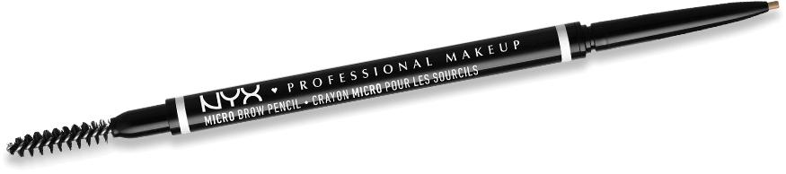
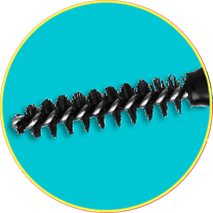
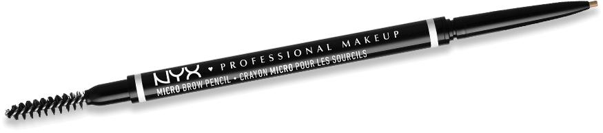
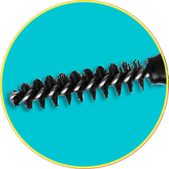

micro brow pencil
Formuła odporna na ścieranie. Kredka odporna na łamanie. Trwałość przez cały dzień.


Pozwól swoim brwiom powrócić do formy i nadaj im kształt z kredką micro brow. micro precyzja. micro siła.
Automatyczna kredka do brwi
Odporna na łamanie się i ścieranie
Wodoodporna i wegańska formuła
Precyzyjna aplikacja
Dostępna w 12 odcieniach
Trwałość przez cały dzień
Micro brow pencil to nasza #1 kredka do brwi na świecie!
Odporna na łamanie i rozmazywanie się? Zgadza się! Taka właśnie jest nasza super mocna kredka Micro Brow Pencil. Dzięki mikro precyzyjnej końcówce uzyskasz naturalnie wypełnione brwi. Wybieraj spośród szerokiej gamy 12 zróżnicowanych odcieni. Formuła jest wegańska i wodoodporna.

Zakochaj się na nowo w naszej kredce do brwi microbrow!
Pełna precyzja dla naturalnie wypełnionych brwi!
Użyj silnej mikro końcówki, aby stopniowo i precyzyjnie wypełnić luki w brwiach oraz zdefiniować Twój naturalny kształt brwi.
 



Dla bardziej naturalnego efektu użyj szczoteczki, aby ułożyć włoski w odpowiednim miejscu i wyczesać ostre linie.